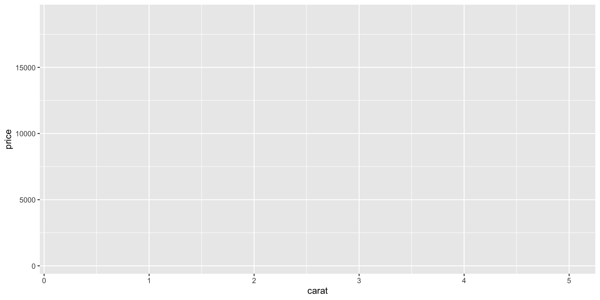
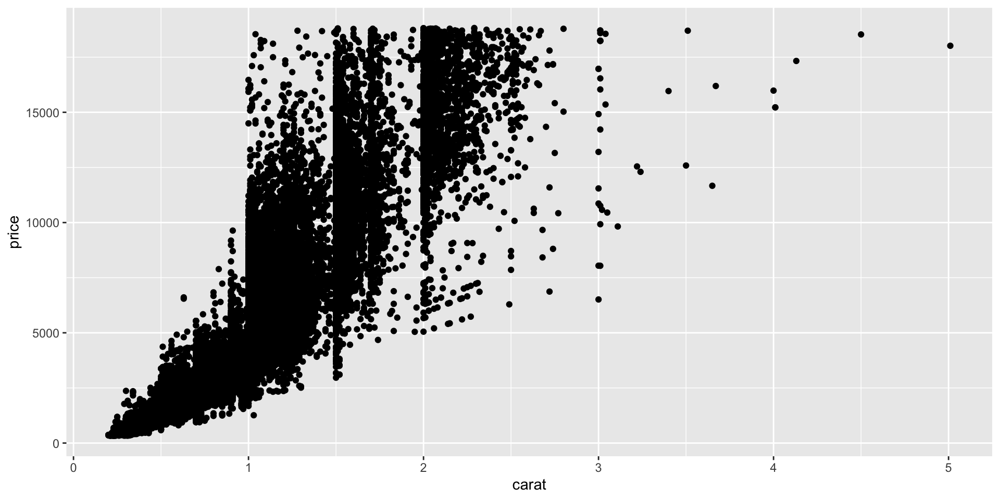
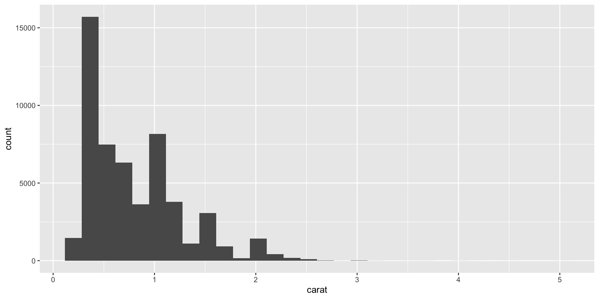
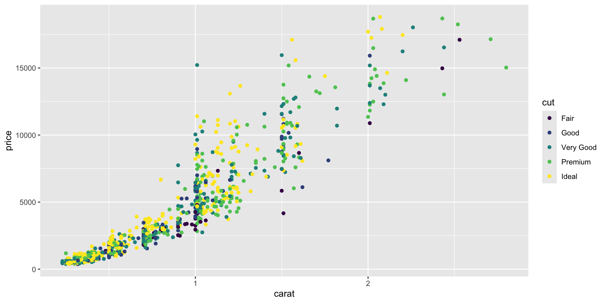
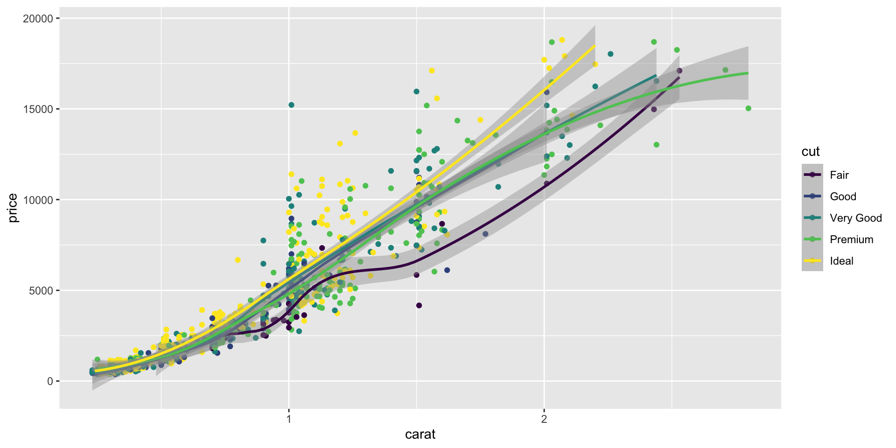
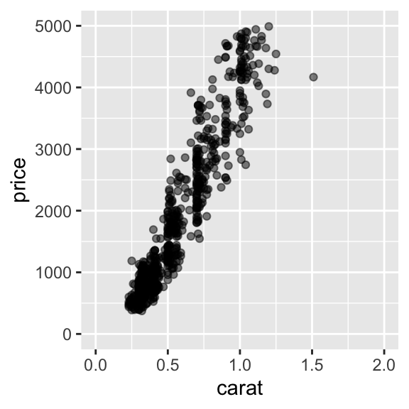
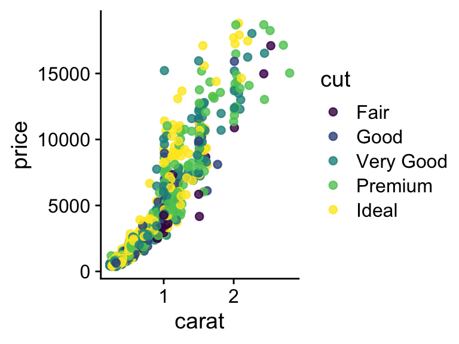
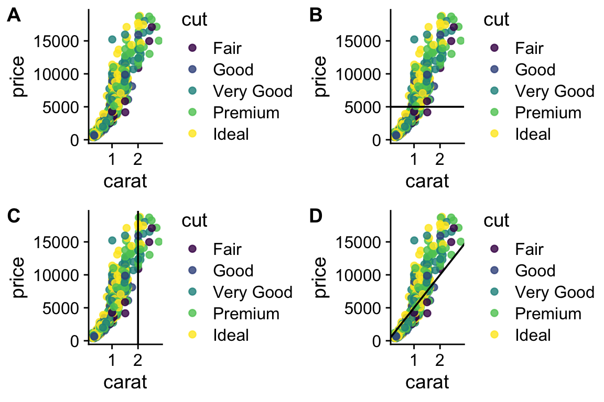
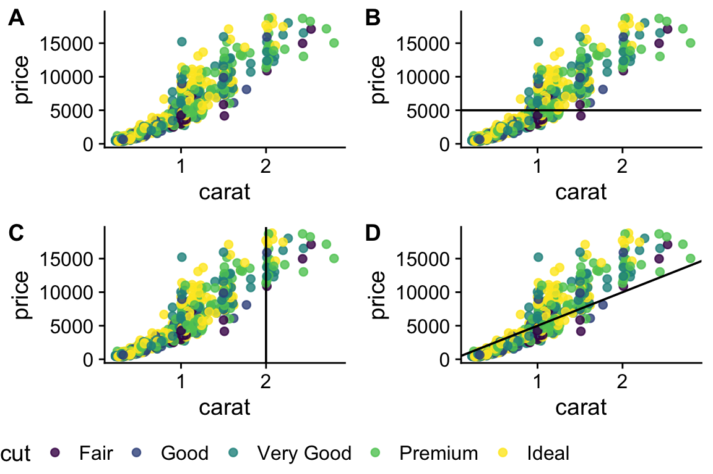

carat cut color clarity depth
Min. :0.2000 Fair : 1610 D: 6775 SI1 :13065 Min. :43.00
1st Qu.:0.4000 Good : 4906 E: 9797 VS2 :12258 1st Qu.:61.00
Median :0.7000 Very Good:12082 F: 9542 SI2 : 9194 Median :61.80
Mean :0.7979 Premium :13791 G:11292 VS1 : 8171 Mean :61.75
3rd Qu.:1.0400 Ideal :21551 H: 8304 VVS2 : 5066 3rd Qu.:62.50
Max. :5.0100 I: 5422 VVS1 : 3655 Max. :79.00
J: 2808 (Other): 2531
table price x y
Min. :43.00 Min. : 326 Min. : 0.000 Min. : 0.000
1st Qu.:56.00 1st Qu.: 950 1st Qu.: 4.710 1st Qu.: 4.720
Median :57.00 Median : 2401 Median : 5.700 Median : 5.710
Mean :57.46 Mean : 3933 Mean : 5.731 Mean : 5.735
3rd Qu.:59.00 3rd Qu.: 5324 3rd Qu.: 6.540 3rd Qu.: 6.540
Max. :95.00 Max. :18823 Max. :10.740 Max. :58.900
z
Min. : 0.000
1st Qu.: 2.910
Median : 3.530
Mean : 3.539
3rd Qu.: 4.040
Max. :31.800
R Bootcamp - Day 4
ggplot2
Jay Hesselberth
RNA Bioscience Initiative | CU Anschutz
2025-09-02
Class 4 & 5 outline
- Introduce ggplot2 & today’s data sets (Exercise 1)
- Understand the basics of ggplot2 (Exercise 2, 3)
- Geom functions (Exercise 4-8)
- Geom_point properties (Exercise 9)
- Position adjustments (Exercise 10)
- Coordinate and Scale Functions (Exercise 11)
- Zooming into a plot (Exercise 12)
- Faceting (Exercise 13)
- Themes (Exercise 14)
- Labels & Legends (Exercise 15)
- Adding lines to plots (Exercise 16)
- Making multi-panel figures (Exercise 17)
- Saving a plot (Exercise 18)
ggplot2
ggplot2 is based on the “grammar of graphics”, the idea that you can build every graph from the same components: a data set, a coordinate system, and “geoms” - visual marks that represent data points.
Today’s datasets
In this class, we will use a data set from ggplot2: diamonds contains thousands of gem prices and qualities.
There are many interesting data sets you can install as R packages for learning to manipulate and plot data:
Getting familiar with the data - Exercise 1
The syntax of ggplot()
ggplot() builds plots piece by piece.
ggplot divides a plot into three different fundamental parts:
plot = data + coordinate-system + geometry.
aesthetics map variables in the data to visual properties of the geom like size, color, and x and y locations.
Making a plot step-by-step (Exercise 2)
Initialize a plot with data.

Next, specify the coordinate system.

Add a geom (geom_point).

Map aesthetics to other variables.
Reduce overplotting by adjusting the transparency of points.
Looking under the hood of ggplot (Exercise 3)
Looking under the hood of ggplot (Exercise 3)
data: carat, cut, color, clarity, depth, table, price, x, y, z
[53940x10]
mapping: x = ~carat, y = ~price, colour = ~cut, size = ~carat
faceting: <ggproto object: Class FacetNull, Facet, gg>
compute_layout: function
draw_back: function
draw_front: function
draw_labels: function
draw_panels: function
finish_data: function
init_scales: function
map_data: function
params: list
setup_data: function
setup_params: function
shrink: TRUE
train_scales: function
vars: function
super: <ggproto object: Class FacetNull, Facet, gg>
-----------------------------------
geom_point: na.rm = FALSE
stat_identity: na.rm = FALSE
position_identity ggplot is powerfully simple for making complex plots
`stat_bin()` using `bins = 30`. Pick better value with `binwidth`.
Note you can drop the data and mapping specifications, as ggplot expects these as the first two arguments. See ?ggplot.
Why can’t I just do this?
You can. But the advantage of ggplot is that it is equally “simple” to make basic and complex plots.
The underlying grammar lets you exquisitely customize the appearance of your plot and easily generate reproducible & publishable figures.
Creating more complex plots
Geom functions
- Use a geom function to represent data points, use the geom aesthetic properties to represent variables.
- Each function returns a plot layer.
- There are many geoms in ggplot that are specific to plots with 1, 2, or 3 variables
Geom functions for one variable - Exercise 4
Make a bar plot.

Update the bar plot aesthetics.

Change to a density plot.
Color the density plot.
Plot subsets by mapping fill to cut

Use ggridges to plot staggered subsets.
https://wilkelab.org/ggridges/
Geom functions for two variables
With two variables, depending on the nature of the data, you can have different kinds of geoms:
- discrete x, continuous y
- continuous x, continuous y
- continuous bivariate
- & others (check out the cheatsheet!)
discrete x, continuous y - Exercise 5
Make a column plot.
Same data with a box plot.
Box plot, with fill color by cut.
What about this plot is not ideal? (hint: how many ways is cut represented?)
Violin plot with fill color by cut.
continuous x, continuous y - Exercise 6
Subset diamonds to see points more clearly.
Make a scatter plot.

Now add a smoothing line.
Here we can combine geoms to see points & the fit
`geom_smooth()` using method = 'loess' and formula = 'y ~ x'
Class 4 End
continuous bivariate - Exercise 7
shape, size, fill, color, and transparency - Exercise 9
R has 25 built in shapes that are identified by numbers.
Some are similar: 0, 15, and 22 are all squares, but interact differently with color and fill aesthetics.
Hollow shapes have a border determined by color, solid shapes (15-18) are filled with color, an the filled shapes (21-24) have color border and fill inside.

Note that aesthetics can also be defined within a geoms.
This is useful if you use two different geoms that share an aesthetic.
Position adjustments - Exercise 10
Position adjustments determine how to arrange geoms that would otherwise occupy the same space.

A stacked bar chart.
Dodged bars are easier to read (proportions are clearer)
Coordinate and Scale Functions - Exercise 11
We won’t go into these functions too much today, but here is a brief overview:
The coordinate system determines how the x and y aesthetics combine to position elements in the plot. The default coordinate system is Cartesian ( coord_cartesian() ), which can be tweaked with coord_map() , coord_fixed() , coord_flip() , and coord_trans() , or completely replaced with coord_polar()
Scales control the details of how data values are translated to visual properties. There are 20+ scale functions. We will look at one; the ggplot2 cheatsheet is your friend for the rest.
Logarithmic axes - 1
Note the difference between axis labels in these two examples.
Logarithmic axes - 2
Flipping coordinate system (swapping x and y)

Now flip the axis.
Brief aside: ggplot can handle on-the-fly data transformations.
Here we log-transform carat and convert USD to CAD.
Zooming into a plot - Exercise 12
We might want to change the limits of x or y axes to zoom in.
Warning: Removed 275 rows containing missing values or values outside the scale range
(`geom_point()`).
You can also use coord_cartesian(xlim, ylim)
Faceting to plot subsets of data into separate panels - Exercise 13
“Facets” are a powerful tool to subdivide a plot based on the values of one or more discrete variables.

Density plot we’ve seen before. Which variables can we use to subdivide the data?
Faceted by cut
Scatter plot with facets.
Themes - Exercise 14
Themes can significantly affect the appearance of your plot. Thanksfully, there are a lot to choose from.

Scatter plot with default theme.
Change the theme with theme_bw().
My go-to is cowplot::theme_cowplot().
It implements much of the advice in the “Dataviz” book, e.g. YOUR LABELS ARE TOO SMALL.

We’re not going to cover it, but you can also customize pre-existing themes.
Labels & Legends - Exercise 15

Use labs() to add / change plot labels.
ggplot(
data = diamonds,
mapping = aes(
x = cut,
y = log(price),
fill = cut
)
) +
geom_boxplot() +
labs(
x = "Cut",
y = "Price (log)",
color = "Cut",
title = "Distribution of diamond prices by cut",
subtitle = "Data come from a random sample of 1000 diamonds",
caption = "Source: diamonds dataset from ggplot2"
) +
theme_cowplot()Additional points
How to add a line to a plot? (Exercise 16)
How to combine multiple plots into a figure? (Exercise 17)
plot1 <- p
plot2 <- p + geom_hline(aes(yintercept = 5000))
plot3 <- p + geom_vline(aes(xintercept = 2))
plot4 <- p + geom_abline(aes(intercept = 0.5, slope = 5000))
all_plots <- plot_grid(
plot1,
plot2,
plot3,
plot4,
labels = c("A", "B", "C", "D"),
nrow = 2
)
all_plots
# we have 4 legends, which is too many - can they be removed?
# Yes, but it is not exactly straightforward
legend <- get_legend(plot1 + theme(legend.position = "bottom"))Warning in get_plot_component(plot, "guide-box"): Multiple components found;
returning the first one. To return all, use `return_all = TRUE`.plot1 <- p + theme(legend.position = "none")
plot2 <- p +
geom_hline(aes(yintercept = 5000)) +
theme(legend.position = "none")
plot3 <- p + geom_vline(aes(xintercept = 2)) + theme(legend.position = "none")
plot4 <- p +
geom_abline(aes(intercept = 0.5, slope = 5000)) +
theme(legend.position = "none")
all_plots <- plot_grid(
plot1,
plot2,
plot3,
plot4,
labels = c("A", "B", "C", "D"),
nrow = 2
)
plot_final <- plot_grid(all_plots, legend, ncol = 1, rel_heights = c(1, .1))
plot_final
More information on using plot_grid (from package cowplot) is here
Saving plots (Exercise 18)
Saves last plot as 5’ x 5’ file named “plot_final.png” in working directory. Matches file type to file extension